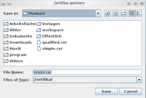

Zertifikate Speichern
Mit Hilfe dieser Funktion können Sie die auf der Karte hinterlegten öffentlichen Zertifikate lokal auf Ihrem Gerät speichern, wobei der unterstützte Funktionsumfang vom Typ und Zustand der verwendeten Karte abhängt.
Auf der Karte sind zwei Zertifikate hinterlegt.
- Einfaches Zertifikat
- Qualifiziertes Zertifikat
Der Speichervorgang wird durch die Betätigung der jeweiligen Schaltfläche ausgelöst.
Wählen Sie im folgenden Fenster den Ordner in dem das Zertifikat gespeichert werden soll. Anschließend betätigen Sie die Schaltfläche 'Speichern' um das Zertifikat zu speichern oder 'Abbrechen' um den Vorgang abzubrechen.
